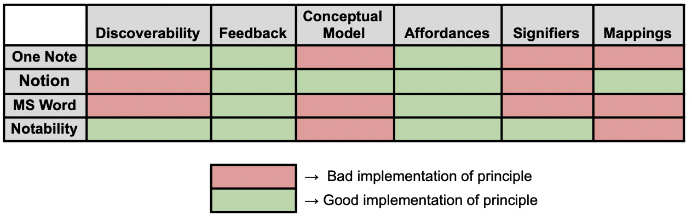

Part A: Problem Definition
Google docs, one of the most commonly used online note-taking applications, is a common sight for note-taking in classrooms. G-Suite holds a dominant 59% market share for online office suites [1]. However, this is not without its own issues. According to Sadeghi et. al., the average rating from regular users is only 3.43 stars out of 5 [2]. As a note-taking interface, Google Docs has several features like text-editing, diagrams, images, and allowing multiple users to edit simultaneously. However, there are many known errors with Google Docs, such as page formatting not being uniform, users being shifted down pages, and latency delays leading to multiple people typing the same sentence because they did not know the other one was typing. This problem is especially relevant to students in face-to-face instruction as these lacking features can lead to students missing notes and information due to the clunkiness of Google Docs or an instructor not being able to draw a quick diagram on the projector to illustrate an idea to the class.
Using the Seven Stages of Action, we can use the example of Inserting an Image to show these issues. The user’s plan would be to add a relevant image using the “Insert” menu on the toolbar. They could choose this image from their computer or from the web. They decide to insert an image from their device and insert it into the document. They then find the image locally and insert it by clicking the button to add it. At this point, the image has been inserted into the document. The user perceives their image on the document, but it may not be formatted correctly. They’d interpret that the image doesn’t fit the formatting of the rest of their document and, in comparison, they may think they need to adjust the formatting. This may frustrate the user as they expect the image to be formatted when they add it, but it requires extra steps to get it how they want. These steps conform to the typical interaction of inserting an image according to the Google Learning Center [3].
Potential users
Several different groups of people use Google Docs as a source of their note-taking. According to research done by Sadeghi et. al., the most common type of user is Ph.D. students and Professors in the fields of computer science and Information technology that voted Google Docs as the best online collaboration document tool. We will be focusing on the student users, both undergraduate and graduate level, as Google Docs tends to be the preferred interface for note-taking [2]. Specifically, in face-to-face instruction, students might use Google Docs because of its availability and portability as a resource. A student using Google Docs might use the interface to record notes from a lecture, make study guides, write an essay, etc. Oftentimes, a student might want to include images as a physical, visual indicator of their notes rather than just text. The problem we proposed often acts as a roadblock to well-written notes. Users could benefit from this because it will add a cleaner, more efficient way of taking notes on their computers.
Part B: Analysis of Existing Solutions
There are several other applications people use for note-taking that present alternatives to the problems that exist in Google Docs. Here we identify each one and what principles they conform to.
 Table 1.1 - Existing solution's implemetations of Norman’s Principles of Good DesignOneNote
One application that does note-taking well is OneNote, an application that makes unbound formatting of drawings and diagrams efficient and easy. For instance, when a user wants to insert a diagram into their notes, the diagram is not treated like a text box that is not fixed to a certain position on the document. Instead, the user is able to move the item to any other position on the screen without tampering with other items on the document. While OneNote is dense with affordances, it lacks clear signifiers which result in a very cluttered interface that is confusing to use.
Notion
Likewise, Notion is another alternative that accomplishes the same goal. It also makes formatting boundless by allowing users to insert and format different items in a document without interrupting the flow of other items on the document. Although these applications accomplish this goal, they lack the feature that Google Docs does where it allows for collaboration simultaneously in your browser. Additionally, these applications are not as popularly used as Google Docs and therefore, while they have solutions, it’s not as heavily trafficked. While Notion has a great conceptual model and mapping, it’s lacking in discoverability as users may be overwhelmed by the number of options the interface offers and may not know what to do with it.
Microsoft Word
Another note-taking alternative is Microsoft Word. It is heavily trafficked and good for long-term use, but it also does not support the same boundless formatting that other applications do. Many of its issues overlap with Google Docs’ problems for note-taking. Additionally, Microsoft Word is not as accessible for users that are not students as there becomes a fee in order to use the application. While Microsoft Word has many affordances and great feedback, it is lacking in discoverability which makes it even more difficult to find signifiers if they are even present.
Notability
Notability is an application used on iOS for note-taking. It is convenient for those who have these devices and offers a wide range of options to draw images and insert diagrams for smooth note-taking. The downside of using this app is that it is not free and is not available on other non-iOS devices. It’s not conducive to working in groups because not everyone uses iOS devices, it’s not cost-effective, and there isn’t live collaboration. While Notability complies with guidelines and principles that support good feedback and discoverability, it lacks affordances for collaboration and accessibility for cross-platform functionality.
Part C: Proposed Solution
Based on the above alternative solutions, our proposed solution would be to improve discoverability, clear signifiers, and efficient mapping in Google docs. Considering what principles other applications are lacking in, our proposed solution would include these properties for far easier, quick note-taking in a face-to-face instruction environment.
Our proposed measure of success would be the number of steps a user would have to take to complete an action, like inserting a diagram or drawing. Other criteria to consider are user experience and the market share of Google, although the way to measure these has not been decided upon yet.
Sources
- 1 (1)
-
statista.com, Oct. 2020. Market share of major office suites technologies in the United Sates, statista.com/statistics/961105/japan-market-share-of-office-suites-technologies/
- 2 (2)
-
Sadeghi et. al. (2018, April 20). A survey of user expectations and tool limitations ... - arxiv. Retrieved https://arxiv.org/pdf/1804.07708.pdf.
- 3 (3)
-
Google Workspace Learning Center, 2021. Add and edit images, support.google.com/a/users/answer/9308621?ref_topic=9327400